Routes and state map
Entry workflow
/clauseiq-v6a
Welcome, initiative selection, supplier identity, benchmark, upload, processing, and first analysis.
Output-panel states
/clauseiq-v6a/output-panel
First result; add ?resultScenario=history for history or ?rerun=upload to enter rerun setup.
Initiative dashboard
/initiatives-v6a?view=results…
Reached from View Result. Parameters select first-analysis or negotiated re-analysis presentation.
ClauseIQ workflow
1. Start, select initiative, and identify the supplier
EntryState change Start reveals initiative selection. Selecting an initiative requests a supplier name; cancel returns to initiative selection. The selected initiative becomes the context for recommendations.
Expected: no output history is shown until a completed analysis exists.
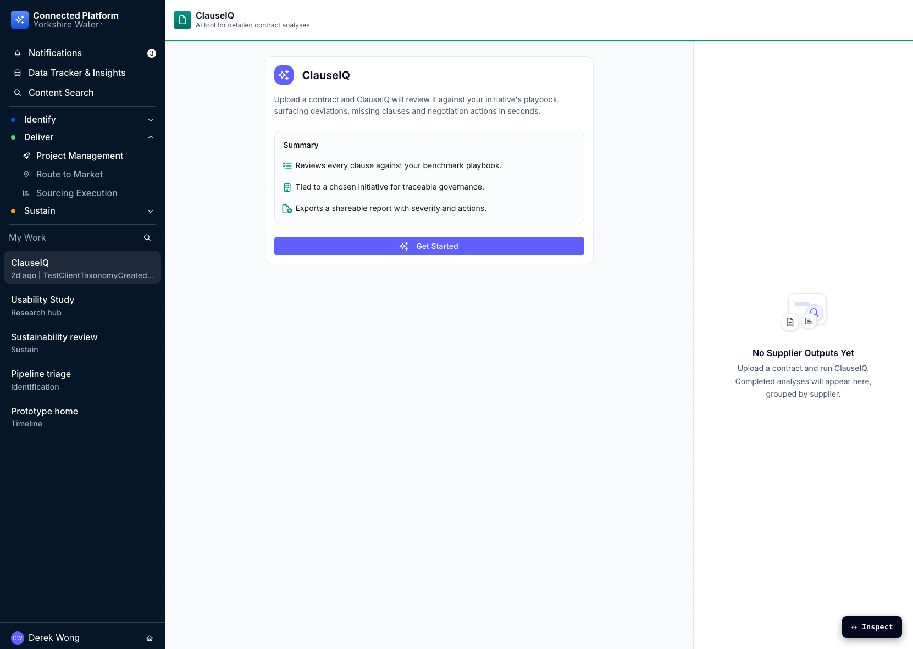

2. Configure a playbook or optional benchmark
Branch “Yes” requires a playbook and advances to upload. “No” exposes suggested optional category and governing-law fields. Users can search, replace, clear, confirm the suggested benchmark, or skip to ClauseIQ’s general standard.
Expected: selecting the incompatible branch clears prior choices; upload remains unavailable until the current branch is complete.
3. Upload and run the first analysis
Validation Only PDF files up to 100 MB are accepted. A valid upload starts processing; the supplier panel changes to its processing state. Completion creates exactly one first output—no seeded history is added to a fresh workflow.
Expected: exact matches attach to the recognised supplier; unrecognised names create a new supplier.
4. Resolve a fuzzy supplier match
Decision A fuzzy name such as Deloitteeee shows “Found A Supplier Match”. The completed status card is hidden; existing outputs remain visible. Keep creates/uses the typed supplier; Use Deloitte Legal attaches the analysis to the suggested supplier.
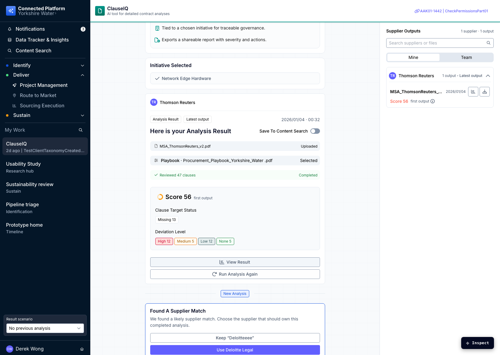
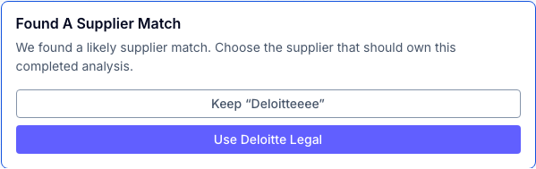
Output panel and reruns
5. First output and post-analysis actions
Output The first-run route seeds one representative output. View Result opens the first-analysis dashboard; download/Save to Content Search use prototype feedback. Milestones can be completed individually; completing the initiative hides its completion action; “Analyse contract on another initiative” resets the flow.
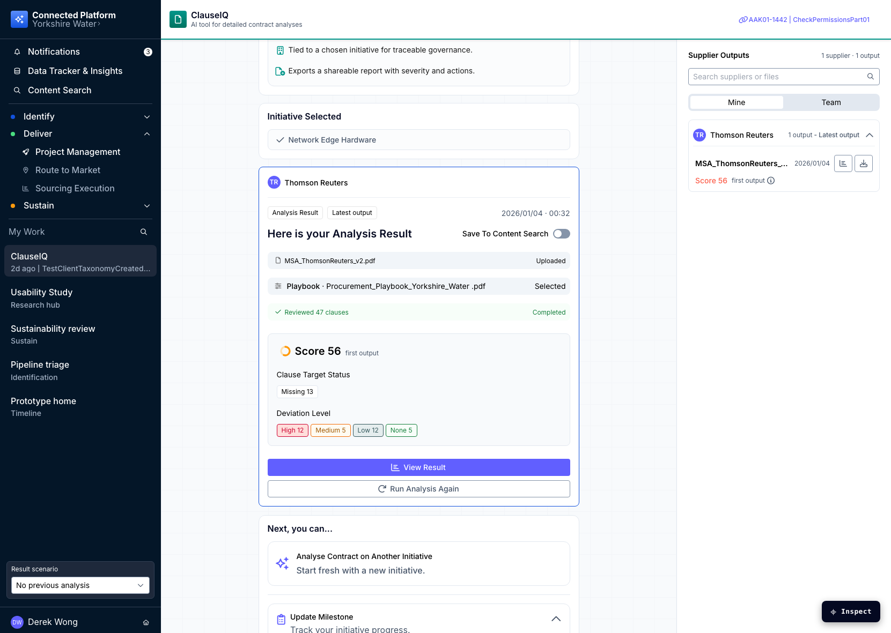
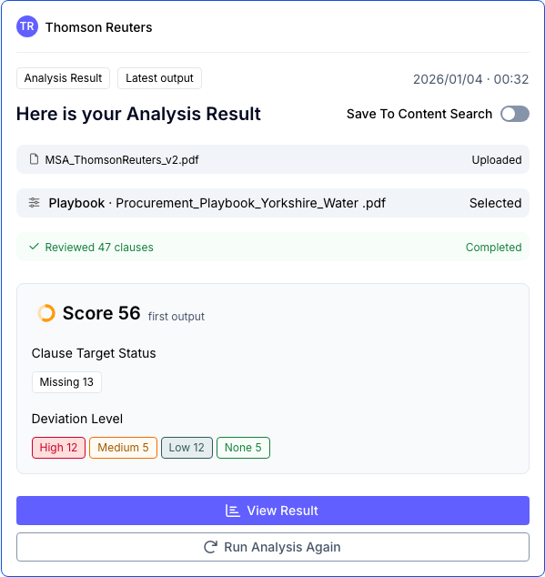
6. Explore supplier output history
History The history scenario shows multiple suppliers and output versions. Expand a supplier, search outputs, open the supplier-history overlay, and sort its records. Existing previous versions expose score deltas and Met / Not Met metadata; a first output does not.
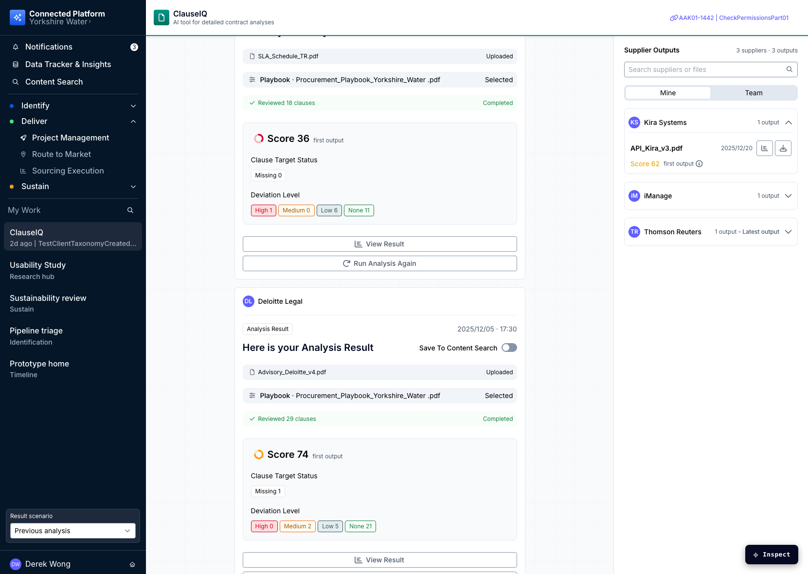
7. Run analysis again
Rerun Choose an existing supplier context or add a new supplier, then configure a playbook or general benchmark and upload. Existing outputs remain above the “New Analysis” divider during processing and after completion. A selected existing supplier remains authoritative even if the upload filename suggests another supplier.
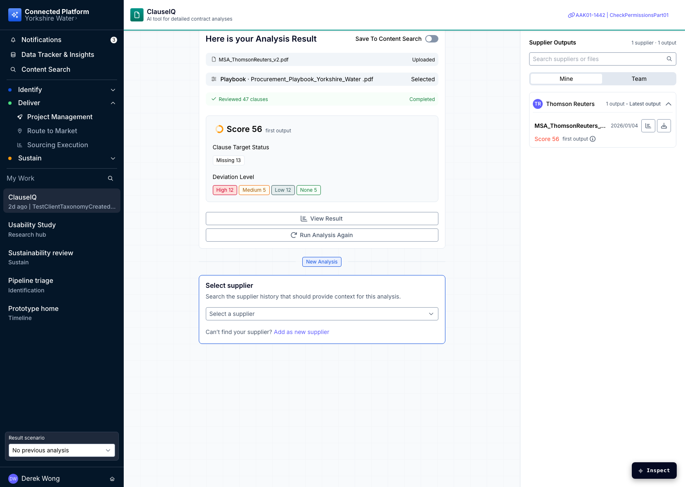
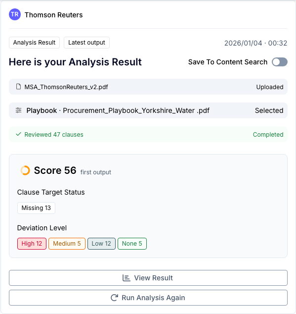
Initiative results dashboard
8. First-analysis dashboard
Dashboard A first output opens the initial-analysis dashboard. The prototype selects the compatible initial-analysis design, exposes clause/deviation filters, and prevents comparison-only states for outputs that lack a previous version.
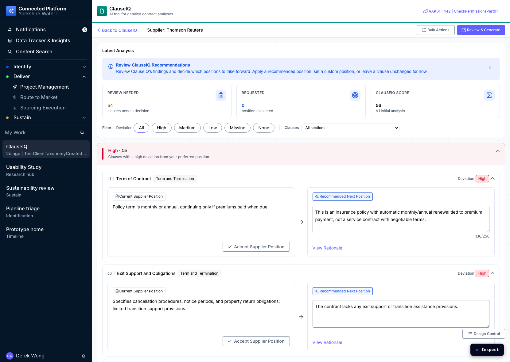

9. Negotiated re-analysis and outcome review
Comparison A later output opens negotiated re-analysis with previous/current versions. Users can switch dashboard design and view, filter outcome rows, set/apply/revert recommended positions, bulk apply scoped recommendations, clear selections with confirmation, and use Review & Generate. Generated CSV state refreshes after review changes.
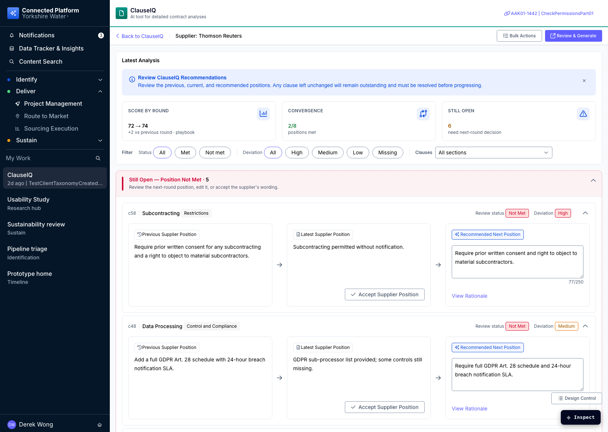
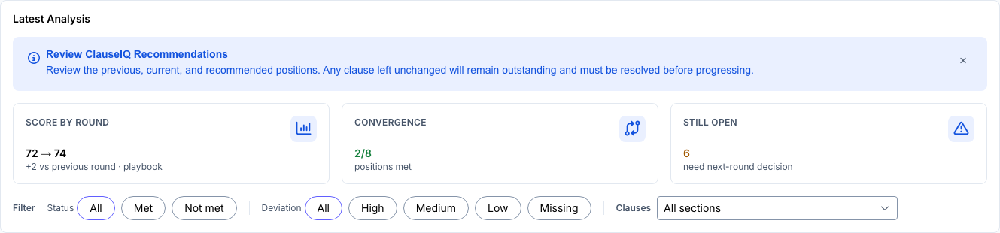
State-changing interaction inventory
Workflow
Start; select/cancel initiative; save supplier; select/change playbook; choose/search/edit/clear/confirm/skip benchmark; reject invalid upload; upload PDF; process; exact/fuzzy/unrecognised supplier ownership.
Outputs
Expand outputs; search; open/sort history; download; toggle content-search simulation; open View Result; mark milestones; complete initiative; reset flow; rerun against existing/new supplier; resolve fuzzy rerun.
Dashboard
Switch compatible design/view; filter outcome and initial clauses; set/accept/edit/undo positions; bulk apply/revert; confirm selection clearing; update review; generate/refresh CSV; inspect accepted supplier positions.